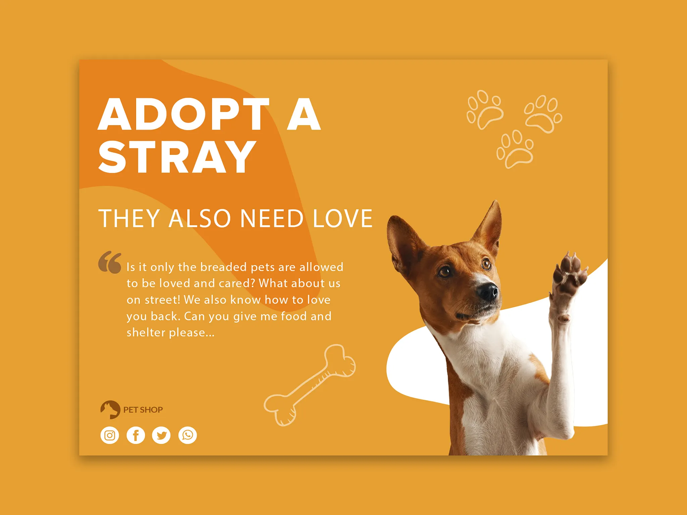
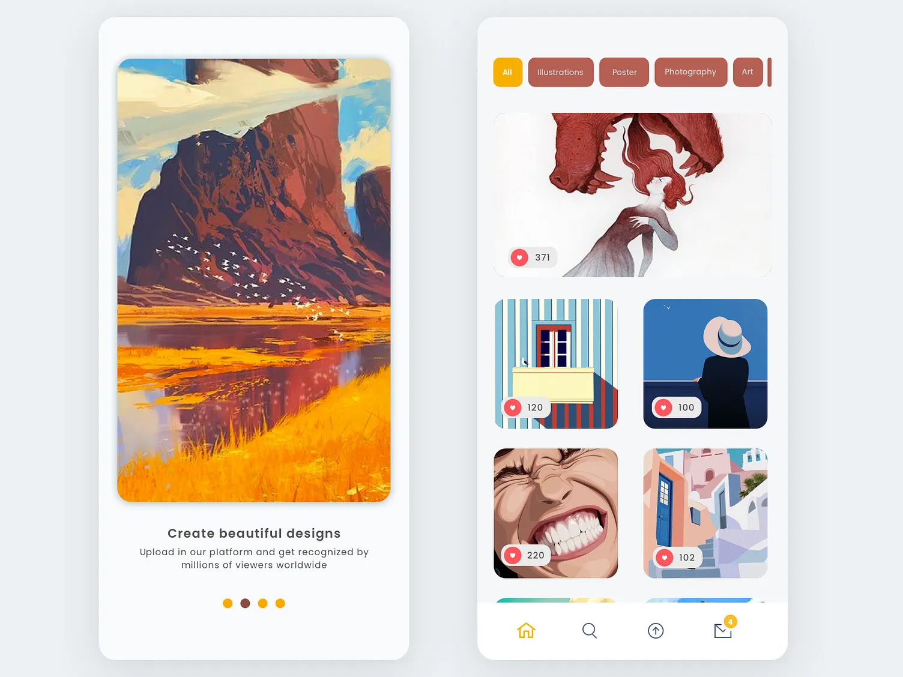

Danura Jayakody
Danura Jayakody
Danura Jayakody
UX/UI Designer | Product Designer
About
UX/UI Designer
I’m a UX/UI Designer who cares deeply about building digital experiences that actually make people’s day easier. Over the past seven years, I’ve worked across POS systems, B2B SaaS platforms, and enterprise tools and the common thread has always been the same. “Turn complexity into clarity.”
I spend a lot of time understanding real users, their habits, shortcuts, frustrations, and motivations. Whether it’s a retail associate rushing through a busy checkout, or a project manager trying to navigate a complex dashboard, I design with empathy and attention to detail. Research, prototyping, usability testing, accessibility, and thoughtful interaction design guide everything I create.
- Experience: 6+ years
- Location: Vancouver, Canada
- Education: MBA (in progress)
- Availability: Open for roles / freelance
Resume
A focused summary of experience and education.
Summary
Danura Jayakody
UX/UI Designer with 6+ years building web and mobile products across POS, SaaS and enterprise.
- Vancouver, Canada
- +1 778 865 7885
- danura.ux@gmail.com
Education
MBA (in progress) — University Canada West
2024 – Present
BSc in Computer Science — University of Westminster
2014 – 2018
Experience
Senior UI/UX Designer — Mad Mobile • Colombo Sri Lanka
2022 – 2025
- Led UX for key product workflows
- Built reusable components and patterns
UI/UX Designer — CAMMS • Colombo Sri Lanka
2022 – 2019
- Designed flows, screens, prototypes
- Improved usability through testing
Portfolio
Selected work.

Adopt a stray

Online gallery
A restaurant app
Blog
Place where I keep all my thoughts.
The Invisible Revolution: How AI is Rewriting the Rules of UI/UX Design
Design Systems: The Foundation of Great Digital Experiences.
Marketing Yourself As a UI/UX Designer.
Contact
Want to collaborate? Send a message.
Details
Location: Vancouver, Canada
Email: danura.ux@gmail.com
Phone: +1 778 865 7885